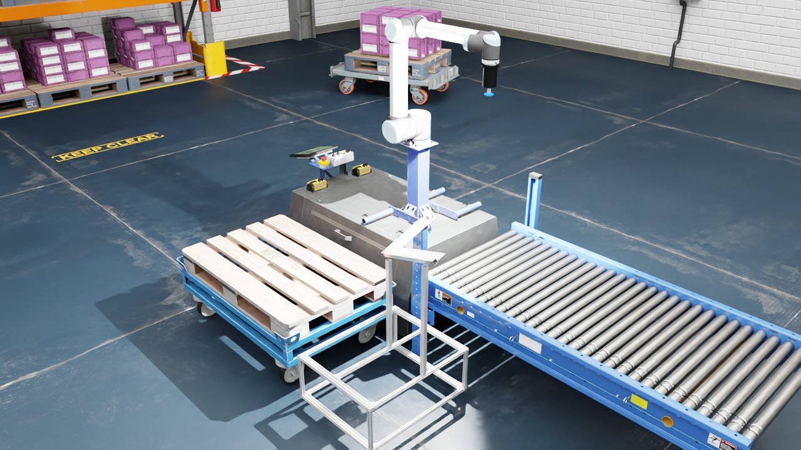
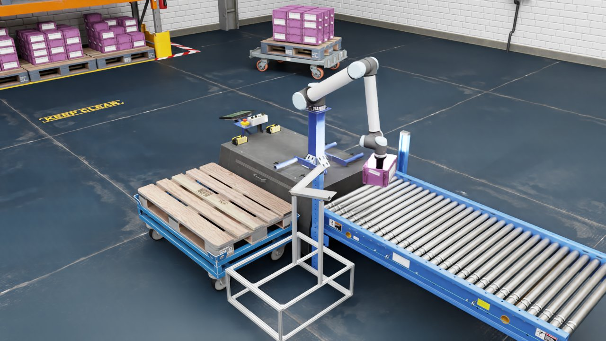
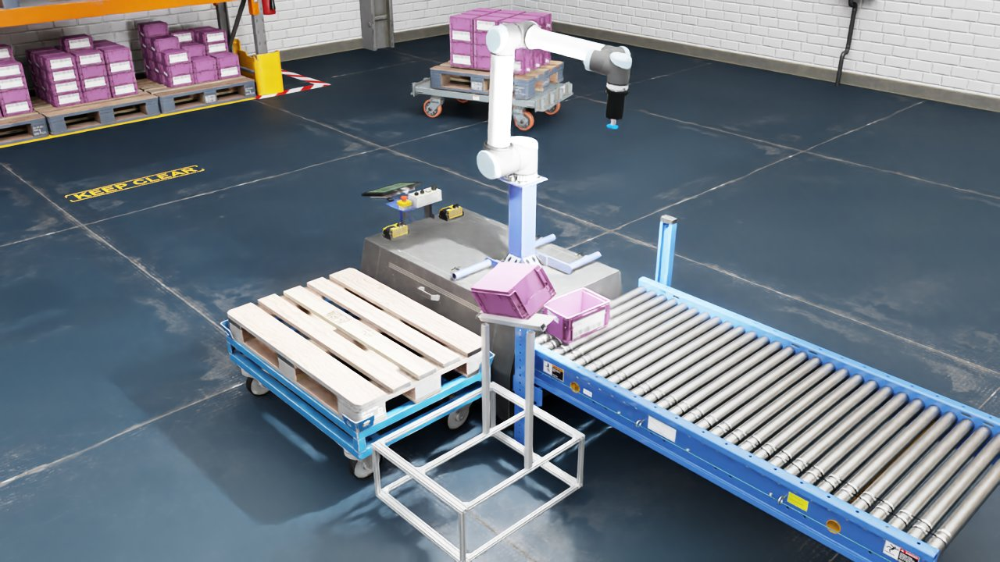
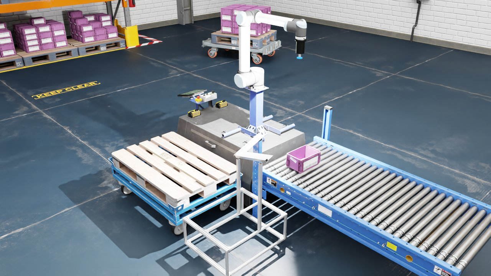

UR10 팔레타이징을
빈 스테이지에서 직접 만들기
Robotics Examples의 UR10 Palletizing이 하는 일을 아홉 단계로 나눠 직접 구현한다. 외부 로봇을 불러오고, 설비를 놓고, 박스를 무작위로 떨어뜨리고, 위치를 읽고, 흡착해서 뒤집고, 팔레트에 쌓는다.
전체 그림
무엇을 만들고, 조각들이 어떻게 맞물리는지 먼저 본다.

셀 배치 (위에서 본 모습)
로봇 베이스가 원점이다. 단위는 m. 박스는 +Y 쪽 입구에서 떨어져 -Y 방향으로 흘러온다. 바닥은 z = -1.18, 로봇은 받침대 위 z = 0에 서 있다.
매 물리 스텝(1/60초)에 일어나는 일
완성본의 주 루프는 이 네 줄이 전부다. 1~8단계는 이 네 줄에 들어갈 부품을 하나씩 만드는 과정이다.
만들 파일
| 단계 | 새로 쓰는 파일 | 실행해서 확인하는 것 |
|---|---|---|
| 0 | palletizing/__init__.py, palletizing/boot.py | 폴더와 실행 방법 |
| 1 | step01_load_robot.py | UR10이 홈 자세로 선다 |
| 2 | palletizing/scene.py (배치), step02_build_scene.py | 설비 7개가 제자리에 놓인다 |
| 3 | scene.py에 컨베이어 함수, step03_conveyor.py | 박스가 1초에 0.30 m 실려 간다 |
| 4 | palletizing/common.py, spawner.py, step04_spawn_bins.py | 박스가 무작위로 계속 나온다 |
| 5 | palletizing/perception.py, step05_perception.py | 집을 점과 뒤집기 여부를 맞힌다 |
| 6 | palletizing/gripper.py, step06_gripper.py | 박스가 붙고, 따라오고, 떨어진다 |
| 7 | palletizing/motion.py, step07_motion.py | 컵 끝이 네 지점에 도착한다 |
| 8 | palletizing/tasks.py, cell.py, step08_pick_place.py | 박스 하나를 팔레트 1번 자리에 놓는다 |
| 9 | palletizing/fsm.py, step09_palletizing.py | 뒤집기를 포함해 9개를 쌓는다 |
0준비
작업 폴더를 만들고, 스크립트를 실행하는 방법과 공통 시작 코드를 갖춘다.
필요한 것
- Isaac Sim 6.2.0. 이 가이드는
C:\isaacsim-6.2에 풀어 놓은 설치본으로 확인했다. 다른 위치면 아래 명령의 경로만 바꾼다. - 인터넷 연결. 로봇·설비 USD를 NVIDIA 에셋 서버에서 내려받는다. 처음 실행은 내려받기와 셰이더 준비 때문에 오래 걸릴 수 있다.
- 편집기 하나(VS Code 등)와 PowerShell.
폴더 만들기
아무 곳에나 작업 폴더를 만들고 그 안에 palletizing 폴더를 만든다. 끝까지 가면 아래 모양이 된다.
IsaacSimUR10Palletizing/ ├─ palletizing/ ← 부품 모듈 (단계마다 하나씩 늘어난다) │ ├─ __init__.py │ ├─ boot.py 0단계 │ ├─ scene.py 2·3단계 │ ├─ common.py 4단계 │ ├─ spawner.py 4단계 │ ├─ perception.py 5단계 │ ├─ gripper.py 6단계 │ ├─ motion.py 7단계 │ ├─ tasks.py 8단계 │ ├─ cell.py 8단계 │ └─ fsm.py 9단계 ├─ step01_load_robot.py ← 단계마다 실행해 보는 스크립트 ├─ … └─ step09_palletizing.py
실행 방법
Isaac Sim 모듈은 Isaac Sim에 들어 있는 Python으로만 불러올 수 있다. 그래서 일반 python이 아니라 설치 폴더의 python.bat으로 실행한다. 가상환경을 따로 만들지 않는다.
cd E:\Github\IsaacSimUR10Palletizing C:\isaacsim-6.2\python.bat step01_load_robot.py
| 옵션 | 뜻 |
|---|---|
(없음) | 창을 띄우고 계속 돈다. 창을 닫으면 끝난다. |
--test --headless | 창 없이 돌리고 스스로 확인한 뒤 [stepNN] PASS 또는 FAIL을 찍고 끝난다. 30초~2분. |
--seed 3 | 무작위 박스 순서를 고정한다. 같은 숫자면 같은 순서로 나온다. |
각 단계는 먼저 창을 띄워 눈으로 보고, 그다음 --test --headless로 PASS를 확인하는 순서를 권한다.
공통 시작 코드
palletizing/__init__.py는 주석 한 줄만 있는 빈 파일이다. 이 파일이 있어야 from palletizing.scene import …처럼 불러올 수 있다.
palletizing/boot.py는 2단계부터 모든 스크립트의 첫 줄에서 쓴다. 하는 일은 세 가지다. 앱을 띄우고, 필요한 확장을 켜고, 물리를 60 Hz로 맞춘다.
SimulationApp(...)을 만들기 전에 isaacsim.core…나 pxr을 import하면 ModuleNotFoundError가 난다. 그래서 모든 스크립트가 start_app()을 먼저 부르고 그 아래에서 나머지를 import한다.1외부 로봇 불러오기
빈 스테이지에 물리·바닥·조명을 넣고, 에셋 서버의 UR10을 불러와 홈 자세로 세운다.
알아 둘 것
- Reference. 로봇 USD 파일을 복사해 넣는 게 아니라, 스테이지의 한 경로(
/World/ur10)에 "이 파일을 여기에 보여 줘"라고 연결한다. 설비와 박스도 전부 같은 방식이다. - Variant. UR10 USD 하나에 여러 형태가 들어 있다.
Gripper는none,short_suction,long_suction중 고른다. 여기서는 짧은 흡착 그리퍼를 쓴다. - Articulation. 관절로 이어진 로봇을 다루는 래퍼다. 관절 이름을 읽고, 관절각을 넣고, 구동기 목표를 준다. 이 UR10은
root_joint로 세계에 고정돼 있어 넘어지지 않는다. - 위치와 목표는 다르다.
set_dof_positions는 관절을 순간 이동시키고,set_dof_position_targets는 구동기가 따라갈 목표를 정한다. 둘을 같이 맞추지 않으면 구동기가 로봇을 예전 목표로 다시 끌고 간다.
코드
이 파일만은 boot.py를 쓰지 않고 전부 풀어 썼다. 번호 순서가 곧 Isaac Sim standalone 스크립트의 뼈대다.
실행과 기대 결과
C:\isaacsim-6.2\python.bat step01_load_robot.py
창에 UR10이 팔을 접은 홈 자세로 서 있으면 된다. --test --headless를 붙이면 아래가 찍힌다.
관절 이름: ['shoulder_pan_joint', 'shoulder_lift_joint', 'elbow_joint', 'wrist_1_joint', 'wrist_2_joint', 'wrist_3_joint'] 링크 이름: ['base_link', 'shoulder_link', 'upper_arm_link', 'forearm_link', 'wrist_1_link', 'wrist_2_link', 'wrist_3_link', 'ee_link'] 현재 관절각(rad): [-1.57 -1.57 -1.57 -1.57 1.57 -0. ] [step01] PASS
variants를 [("Gripper", "none")]이나 long_suction으로 바꿔 실행해 본다. 같은 파일에서 끝단 모양이 달라진다.2설비 배치
로봇 주변에 받침대, 하우징, 컨베이어, 뒤집기 장치, 팔레트, 대차를 놓는다.
알아 둘 것
- 자세는 쿼터니언
(w, x, y, z).(0.7071, 0, 0, -0.7071)은 Z축 둘레 -90도,(0.7071, 0, 0, 0.7071)은 +90도다. 이 두 값만 쓴다. - 충돌 그룹. 로봇은 하우징 안쪽에 서 있어 팔이 하우징에 닿을 수 있다. 공식 예제와 같이 둘을 서로 충돌 계산에서 뺀다.
- 보이지 않는 바닥. 창고 배경은 그림일 뿐 물리가 없다. 떨어진 박스를 받칠 물리 바닥을
z = -1.18에 따로 깐다. - 배치 좌표는 공식 예제의 값이다. 로봇이 닿을 수 있는 범위와 뒤 단계의 목표 좌표가 이 배치에 맞춰져 있으니 처음에는 그대로 쓴다.
코드: palletizing/scene.py (배치 부분)
파일 머리와 상수, 에셋 주소, 붙이기 도우미, 배치 함수를 차례로 쓴다. 컨베이어 관련 함수 세 개(_keep_rollers_kinematic, configure_conveyor, set_conveyor_running)는 3단계에서 설명한다. 미리 같이 써 두어도 된다.
scene.py 전체 보기 (import와 3단계 함수 포함)
{{code:palletizing/scene.py}}코드: step02_build_scene.py
{{code:step02_build_scene.py}}
실행과 기대 결과
C:\isaacsim-6.2\python.bat step02_build_scene.py
ur10 x[-0.09,+1.23] y[-0.08,+0.26] z[-0.05,+0.22] ur10_mount x[-0.14,+0.14] y[-0.14,+0.14] z[-0.52,+0.00] housing x[-0.48,+0.49] y[-1.27,+0.38] z[-1.18,+0.04] conveyor x[-0.63,+0.52] y[+0.41,+2.41] z[-1.40,-0.23] flip_station x[+0.54,+1.29] y[+0.37,+1.02] z[-1.11,-0.10] pallet x[+0.48,+1.28] y[-0.93,+0.28] z[-0.81,-0.67] dolly x[+0.46,+1.31] y[-0.96,+0.30] z[-1.18,-0.74] [step02] PASS
찍힌 범위가 위 평면도와 맞는지 대조해 본다. (이 시점의 로봇은 아직 팔을 뻗은 0도 자세라 x가 1.23까지 나온다.)

3컨베이어 구동
컨베이어를 돌리고 세운다. 박스 하나를 올려 실제로 실려 가는지 잰다.
알아 둘 것
- 컨베이어는 움직이지 않는다. 롤러는 제자리에 있는 kinematic 강체이고, 표면에 닿은 물체를 일정 속도로 밀어 주는 표면 속도만 가진다. 그래서 박스가 실려 간다.
create_conveyor_belt가 액션 그래프(ConveyorBeltGraph)를 만들어 준다. 매 프레임 그래프 변수Velocity를 읽어 표면 속도에 넣는다. 돌리고 세우는 것은 이 변수 하나를 0.30과 0 사이에서 바꾸는 일이다.- 순서가 중요하다. 롤러를 kinematic으로 지정하는 것은 reference를 붙이는 것과 한 묶음(
Sdf.ChangeBlock)으로 하고,configure_conveyor()는 에셋이 다 열린 뒤에 부른다.
코드: scene.py의 컨베이어 함수
{{code:palletizing/scene.py:_keep_rollers_kinematic}}
{{code:palletizing/scene.py:configure_conveyor}}
{{code:palletizing/scene.py:set_conveyor_running}}
코드: step03_conveyor.py
박스 USD(small_KLT.usd)는 이미 질량 0.56 kg의 강체로 만들어져 있다. reference로 붙이고 RigidPrim으로 감싸면 위치를 읽고 쓸 수 있다.
실행과 기대 결과
C:\isaacsim-6.2\python.bat step03_conveyor.py
구동 1초: y 1.428 → 1.128 (이동 0.300 m, 기대값 약 0.30) 정지 1초: y 1.114 → 1.114 (이동 0.000 m, 기대값 약 0) [step03] PASS
scene.py의 CONVEYOR_SPEED를 0.6으로 바꾸면 이동 거리가 두 배가 된다. 확인하고 0.30으로 되돌린다.4무작위 박스 만들기
컨베이어 입구에 박스를 무작위 위치·방향으로 하나씩 만들어 낸다. 절반은 엎어서 내보낸다.
알아 둘 것
- 무작위 요소 세 가지. 폭 방향 위치
x(±0.15 m), 수직축 둘레 회전(±180도), 엎어졌는지(확률 50%). - 박스의 z축.
small_KLT는 로컬 z축이 바닥에서 입구로 향한다. Y축으로 180도 돌리면 입구가 아래로 간다. 5단계의 "뒤집기 필요" 판정이 이 z축을 본다. - 만드는 시점. 컨베이어 구역(
y > 0,|x| < 0.4)에 박스가 있으면 기다린다. 로봇이 박스를 들고 구역 밖으로 나가는 순간 다음 박스가 나온다. - USD 위치와 물리 위치.
RigidPrim(...)에 준 위치는 USD에 적히고,set_world_poses는 물리 엔진의 위치를 바꾼다. 재생 중에 새로 만든 박스는 두 쪽을 같은 값으로 맞춘다.
코드: palletizing/common.py
여러 모듈이 함께 쓰는 자세 계산 도구다. 이 단계에서는 rigid_pose만 쓰지만 한 번에 써 둔다.
코드: palletizing/spawner.py
{{code:palletizing/spawner.py}}
코드: step04_spawn_bins.py
아직 로봇이 박스를 집지 못하므로, 박스가 작업 구역에 닿으면 스크립트가 옆으로 치운다.
{{code:step04_spawn_bins.py}}실행과 기대 결과
C:\isaacsim-6.2\python.bat step04_spawn_bins.py --seed 3
<박스 생성 bin_0: x=-0.079, 엎어짐> 도착 위치 x=-0.079, y=0.697, z=-0.557 → 치움 <박스 생성 bin_1: x=+0.031, 엎어짐> 도착 위치 x=+0.033, y=0.699, z=-0.557 → 치움 <박스 생성 bin_2: x=-0.146, 엎어짐> 도착 위치 x=-0.144, y=0.696, z=-0.557 → 치움 [step04] PASS
--seed 숫자를 바꾸면 위치와 엎어짐 순서가 달라진다. --seed 5는 처음 세 개가 "바로 놓임"으로 나온다.
5무작위 위치 인식
작업 구역에 들어온 박스가 어디에 어떤 방향으로 놓였는지 읽고, 흡착컵이 가야 할 자세와 뒤집기 필요 여부를 계산한다.
read_world_pose 자리에 3D 비전의 포즈 추정 결과가 들어가고, 그 아래 계산은 그대로 쓸 수 있다.알아 둘 것
- 바닥판을 읽는다. 박스 안의
Collision/Cube_03이 바닥판이다. 흡착컵이 붙을 평평한 면이라서 박스 중심이 아니라 이 prim의 포즈를 읽는다. - 뒤집기 판정. 박스 z축(바닥 → 입구)이 위를 향하면 입구가 위다. 이 박스는 엎어서 쌓아야 하므로 "뒤집기 필요"다. 식으로는
dot(위쪽, 박스 z축) > 0한 줄이다. - 집을 자세
grasp_T. 4x4 행렬이고 x축이 흡착컵이 다가가는 방향이다. 두 경우 모두 위에서 아래로 내려간다. 입구가 위면 박스 안으로 들어가 안쪽 바닥을, 엎어져 있으면 드러난 바깥 바닥을 집는다.
코드: palletizing/perception.py
{{code:palletizing/perception.py}}
코드: step05_perception.py
박스를 만들 때 엎었는지(spawner.upside_down_log)를 정답지로 삼아, 인식 결과가 맞는지 스스로 채점한다.
실행과 기대 결과
C:\isaacsim-6.2\python.bat step05_perception.py --seed 5
<박스 생성 bin_0: x=+0.037, 바로 놓임> 인식: 집을 점 (+0.035, 0.696, -0.626), 접근 방향 [-0. -0. -1.], 회전 +88도, 뒤집기 필요 → 정답 <박스 생성 bin_1: x=+0.133, 바로 놓임> 인식: 집을 점 (+0.131, 0.696, -0.626), 접근 방향 [ 0. -0. -1.], 회전 +86도, 뒤집기 필요 → 정답 <박스 생성 bin_2: x=-0.141, 바로 놓임> 인식: 집을 점 (-0.141, 0.696, -0.626), 접근 방향 [-0. -0. -1.], 회전 +167도, 뒤집기 필요 → 정답 <박스 생성 bin_3: x=+0.045, 엎어짐> 인식: 집을 점 (+0.043, 0.695, -0.483), 접근 방향 [ 0. 0. -1.], 회전 +145도, 뒤집기 불필요 → 정답 [step05] PASS
읽을 점. 집을 점의 높이가 바로 놓인 박스는 -0.626(안쪽 바닥), 엎어진 박스는 -0.483(위로 드러난 바닥)이다. 차이 0.143 m가 박스 높이다.
6붙였다 떨어뜨리기
흡착 그리퍼를 켜서 박스를 붙이고, 로봇을 움직여도 따라오는지 보고, 꺼서 떨어뜨린다.
알아 둘 것
- 그리퍼는 로봇 USD에 이미 들어 있다.
Gripper=short_suction을 고르면ee_link/SurfaceGripper(그리퍼 본체)와ee_link/suction_cup/Suction_Joint(붙는 지점)가 따라온다. - 붙이기 = 조인트 만들기.
close를 부르면 붙는 지점 앞 2 cm(maxGripDistance) 안의 강체를 찾아 조인트로 묶는다. 닿은 물체가 없으면 상태가Closing에 머물고 계속 다시 시도한다. 물체가 묶여야Closed가 된다. - 떼기 = 조인트 풀기.
open을 부르면 조인트가 사라지고 박스는 중력으로 떨어진다. - 컵 끝 위치.
ee_link원점에서 +X 방향 17 cm가 흡착컵 끝이다. 뒤 단계의 모든 목표는 이 "컵 끝" 기준이다.
코드: palletizing/gripper.py
{{code:palletizing/gripper.py}}
코드: step06_gripper.py
로봇을 원하는 곳으로 보내는 기능은 7단계에서 만든다. 여기서는 반대로 박스를 컵 앞에 가져다 놓는다.
{{code:step06_gripper.py}}실행과 기대 결과
C:\isaacsim-6.2\python.bat step06_gripper.py
흡착컵 끝 위치: [0.164 0.688 0.478] 컵이 향하는 방향: [ 0. 0. -1.] 닫기 후 1초: 상태 Closed(붙음), 박스 높이 z=0.386 로봇 회전 후: 컵 끝과 박스 중심 거리 0.092 m (붙어 있으면 약 0.08) 열기 후 0.5초(깨우기 전): 박스 높이 z=0.386 열기 후 1.5초: 상태 Open(놓음), 박스 높이 z=-0.557 [step06] PASS
z=0.386). 가만히 매달려 있던 강체를 물리 엔진이 "잠재워" 두었고, 조인트가 풀려도 스스로 깨어나지 않았기 때문이다. 속도를 아주 조금 주어 깨우자 떨어졌다. 전체 작업에서는 박스를 놓는 순간 팔레트에 닿아 있거나 로봇이 움직이는 중이라 이 문제가 드러나지 않는다.
7로봇 움직이기
"흡착컵 끝을 이 위치, 이 방향으로"라는 명령 하나로 로봇을 보낸다.
알아 둘 것
- RMPflow. 경로를 미리 다 짜 두는 방식이 아니다. 매 스텝 "목표로 끌리는 힘"과 "장애물·관절 한계에서 밀리는 힘"을 합쳐 다음 관절 목표를 낸다. 그래서 목표가 조금씩 움직여도 계속 따라간다. UR10용 설정은 Isaac Sim에 들어 있다(
load_cumotion_supported_robot("ur10")). - 컵 끝 → tool0 환산. RMPflow는 로봇의
tool0프레임을 움직인다. 명령은 컵 끝 기준이므로 컵 길이 17 cm만큼 뒤로 물리고,ee_link와tool0의 축 방향 차이를 회전으로 보정한다. - 접근 깔때기. 목표로 곧장 가면 비스듬히 들어가 박스 벽에 걸린다. 컵이 접근선(목표 위 수직선)에서 벗어난 만큼 목표를 위로 물려 두면, 먼저 위에 정렬한 뒤 곧게 내려간다.
- 가상 장애물. 화면에 안 보이는 공과 캡슐을 경로 계산에만 넣는다. 컨베이어와 팔레트 사이를 건널 때 켜면 팔이 높이 돌아서 간다.
- 홈 복귀는 관절 제어. 같은 컵 위치라도 팔꿈치가 접히는 모양은 여러 가지다. 관절값으로 직접 돌아가야 매번 같은 모양에서 다음 동작을 시작한다.
코드: palletizing/motion.py
가장 긴 파일이다. 핵심 세 조각을 먼저 읽고, 아래 접힌 블록에서 전체를 따라 쓴다.
(1) 명령 형식과 접근 깔때기.
{{code:palletizing/motion.py:MotionCommand}} {{code:palletizing/motion.py:shift_for_approach}}(2) 매 스텝 실행. 관절 목표가 있으면 관절 제어기, 없으면 RMPflow를 고른다.
{{code:palletizing/motion.py:Ur10.step}}(3) 컵 끝 목표를 tool0 목표로.
{{code:palletizing/motion.py:Ur10._tool_setpoint}}motion.py 전체 보기 (따라 쓸 원본)
{{code:palletizing/motion.py}}create_planning_obstacles() → 에셋 대기 → robot.setup() → 재생 → robot.start(). setup()은 재생 전에, start()는 재생 후에 부른다.코드: step07_motion.py
{{code:step07_motion.py}}
실행과 기대 결과
C:\isaacsim-6.2\python.bat step07_motion.py
홈에서 컵 끝 위치: [0.164 0.688 0.478] 컨베이어 위 집는 높이: 2.32초에 도착, 위치 오차 9.0 mm 30 cm 들어 올리기: 0.73초에 도착, 위치 오차 18.8 mm 팔레트 위: 3.30초에 도착, 위치 오차 17.9 mm 홈 복귀(관절 제어): 0.85초에 도착, 위치 오차 0.0 mm [step07] PASS
오차는 각 이동에 준 도착 기준(p_thresh, 1~2 cm) 안에 들어온 순간의 값이다. 기준을 줄이면 더 정확히 맞춘 뒤 넘어가고, 그만큼 오래 걸린다.
make_approach(...)를 None으로 바꿔 실행하면 컵이 비스듬히 내려간다. 깔때기가 하는 일을 눈으로 볼 수 있다.8한 번 집어 놓기
지금까지 만든 부품을 묶어, 박스 하나를 컨베이어에서 집어 팔레트 1번 자리에 놓는다.
알아 둘 것
- 동작 조각(Task). "기다리기", "집을 자세로 가기", "흡착 켜기", "들어 올리기" 같은 작은 동작이다. 각 조각은 관측을 받아
(끝났는가, 명령)을 돌려준다. 시뮬레이터를 직접 만지지 않는다. - 관측과 명령.
Observation은 한 스텝에 본 것 전부,Command는 한 스텝에 할 일 전부다. 조각과 셀 사이에는 이 둘만 오간다. - 셀(PalletizingCell).
read()로 관측을 만들고apply()로 명령을 실행한다. 판단은 하지 않는다. 5단계의 인식 함수와 6·7단계의 로봇을 여기서 묶는다. - 붙었는지 판정. 컵이 집을 자세 10 cm 안에 있고 그리퍼 상태가
Closed면 붙은 것으로 본다. 붙으면 컨베이어를 다시 돌려 다음 박스를 부른다.
집기 순서 (pick_sequence) | 놓기 순서 (place_sequence) |
|---|---|
| 1. 1초 기다린 뒤 컨베이어 정지 2. 집을 자세로 접근 3. 1초 대기 4. 흡착 켜고 붙을 때까지 5. 50 cm 들어 올리기 |
6. 팔레트의 다음 자리로 내려가기 7. 0.5초 대기 8. 흡착 끄기 9. 10 cm 올라가기 10. 홈으로 |
코드: palletizing/tasks.py
먼저 관측·명령 형식과 대표 조각 두 개, 그리고 조각을 이어 붙인 순서를 읽는다.
{{code:palletizing/tasks.py:Observation}} {{code:palletizing/tasks.py:Command}} {{code:palletizing/tasks.py:Move}} {{code:palletizing/tasks.py:ReachToPick}} {{code:palletizing/tasks.py:pick_sequence}} {{code:palletizing/tasks.py:place_sequence}}tasks.py 전체 보기 (따라 쓸 원본)
{{code:palletizing/tasks.py}}코드: palletizing/cell.py
놓을 자리 9곳을 만드는 함수부터 본다. 팔레트 윗면 높이에 박스 반 높이를 더한 곳이 컵 끝의 목표다.
{{code:palletizing/cell.py:stack_coordinates}} {{code:palletizing/cell.py:PalletizingCell._update_active_bin}}cell.py 전체 보기 (따라 쓸 원본)
{{code:palletizing/cell.py}}코드: step08_pick_place.py
박스를 전부 엎어서 내보내(upside_down_probability=1.0) 뒤집기 없이 집기 + 놓기만 한 번 돈다.
실행과 기대 결과
C:\isaacsim-6.2\python.bat step08_pick_place.py --seed 2
<박스 생성 bin_0: x=+0.137, 엎어짐> <작업 시작: 동작 10개> 1/10 Wait 완료 (t=3.90s) 2/10 ReachToPick 완료 (t=6.12s) 3/10 Wait 완료 (t=7.12s) <흡착 켜기> 4/10 CloseGripper 완료 (t=7.15s) 5/10 LiftToClearance 완료 (t=8.27s) <박스 생성 bin_1: x=-0.125, 엎어짐> 6/10 ReachToPlace 완료 (t=11.78s) 7/10 Wait 완료 (t=12.28s) <흡착 끄기> 8/10 OpenGripper 완료 (t=12.30s) 9/10 TimedLift 완료 (t=12.55s) 10/10 OrientToHome 완료 (t=13.58s) 놓인 위치 (1.054, -0.622, -0.594), 목표와의 수평 오차 4 mm [step08] PASS
읽을 점. 5번(들어 올리기)이 끝난 직후 bin_1이 생긴다. 박스가 컨베이어 구역을 벗어나자 4단계의 생성기가 다음 박스를 낸 것이다.

9뒤집고 차곡차곡 쌓기
상태기계를 얹어, 박스마다 "집기 → (필요하면 뒤집기 → 다시 집기) → 놓기"를 반복해 9개를 쌓는다.
알아 둘 것
- 상태기계. 8단계는 순서가 하나로 정해져 있었다. 이제는 박스에 따라 갈 길이 갈린다. "지금 어느 단계인가"를 상태로 두고, 일이 끝날 때마다 조건을 보고 다음 상태로 옮긴다.
transitions패키지(Isaac Sim에 들어 있다)가 이 표를 실행해 준다. - 뒤집기의 원리. 로봇이 박스를 돌리는 게 아니다. 입구가 위인 박스를 안쪽 바닥으로 집어 뒤집기 장치에 비스듬히 걸쳐 놓고 손을 빼면, 박스가 넘어가며 엎어진다. 그 뒤 드러난 바깥 바닥을 다시 집는다.
- 들고 있을 때의 "위". 박스가 기울어진 채 들려 있으면 중력 기준 판정이 틀린다. 그래서 붙어 있는 동안은 컵의 반대 방향을 "위"로 쓴다(
cell.py의up_vec). - 실패 복구. 박스를 놓치면(
has_active_bin이 거짓) 대기 상태로 돌아가 다음 박스를 기다린다.
코드: palletizing/fsm.py
{{code:palletizing/fsm.py}}
뒤집기 순서
tasks.py에 이미 써 둔 조각들이다. 홈 자세를 거쳐 뒤집기 장치로 가고, 놓고, 컵을 박스 밖으로 빼며 물러난다.
코드: step09_palletizing.py
주 루프가 "전체 그림"에서 본 네 줄 그대로다.
{{code:step09_palletizing.py}}실행과 기대 결과
먼저 뒤집기가 꼭 나오는 순서로 2개만 쌓아 본다.
C:\isaacsim-6.2\python.bat step09_palletizing.py --seed 5 --max-bins 2
<박스 생성 bin_0: x=+0.037, 바로 놓임> -> picking <흡착 켜기> -> flipping <박스 생성 bin_1: x=+0.133, 바로 놓임> <흡착 끄기> -> picking <흡착 켜기> -> placing <흡착 끄기> -> idle -> picking … -> done <쌓은 박스 2/2, 거친 상태 ['done', 'flipping', 'idle', 'picking', 'placing'], 43초> [step09] PASS


그다음 옵션 없이 실행하면 9개를 모두 쌓고 done에서 멈춘다.
C:\isaacsim-6.2\python.bat step09_palletizing.py
내 것으로 바꾸기
완성본이 돌면, 한 번에 하나씩 바꿔 가며 내 설비로 옮긴다.
| 바꾸고 싶은 것 | 고칠 곳 | 주의 |
|---|---|---|
| 쌓는 패턴·개수 | cell.py의 stack_coordinates() | 목록 순서가 쌓는 순서다. 2층은 z에 BIN_HEIGHT를 더한 좌표를 뒤에 덧붙인다. 로봇이 닿는 범위인지 7단계 스크립트로 먼저 확인한다. |
| 다른 제품 | scene.py의 "bin" 주소, perception.py의 base_path와 margin, cell.py의 BIN_HEIGHT | 제품 USD가 강체(RigidBody)여야 하고 흡착할 평평한 면이 필요하다. 뒤집을 일이 없는 제품이면 needs_flip을 항상 False로 둔다. |
| 박스가 나오는 위치·빈도 | spawner.py의 random_bin_pose()와 step()의 구역 조건 | 작업 구역(perception.py의 WORK_ZONE_*)과 함께 맞춘다. |
| 컨베이어 속도 | scene.py의 CONVEYOR_SPEED | 빨라지면 정지까지 밀리는 거리가 늘어 집을 위치가 달라진다. |
| 실제 비전으로 인식 | perception.py의 estimate_grasp() 첫 줄 | read_world_pose 대신 비전이 준 바닥면 포즈를 넣는다. 나머지 계산은 같다. |
| 다른 로봇 | scene.py의 "ur10" 주소, motion.py의 HOME_JOINTS·TIP_OFFSET·축 보정, 가상 장애물 | RMPflow 설정이 있는 로봇이어야 한다. Isaac Sim에 설정이 들어 있지 않은 로봇은 로봇 기술 파일과 RMPflow 설정을 직접 만들어야 하며, 이 가이드의 범위 밖이다. |
standalone_examples\api\isaacsim.asset.importer.urdf\urdf_import.py가 그 예제다. 바꾼 USD의 주소를 1단계의 ur10_usd 자리에 넣으면 불러오는 것까지는 같은 방법으로 된다. 흡착 그리퍼는 isaacsim.robot.surface_gripper의 create_surface_gripper()로 끝단 링크에 직접 달아야 한다.막혔을 때
| 증상 | 원인과 조치 |
|---|---|
ModuleNotFoundError: isaacsim.core… 또는 pxr | SimulationApp을 만들기 전에 import했다. start_app() 아래로 옮긴다. 일반 python으로 실행한 경우에도 같은 오류가 난다. python.bat으로 실행한다. |
ModuleNotFoundError: palletizing | 작업 폴더가 아닌 곳에서 실행했거나 palletizing/__init__.py가 없다. |
| 에셋 서버를 찾지 못했다는 오류, 또는 빈 화면에서 오래 멈춤 | 인터넷 연결을 확인한다. 처음 실행은 내려받기 때문에 오래 걸린다. |
| 컨베이어 롤러가 아래로 떨어진다 † | _keep_rollers_kinematic이 빠졌거나 Sdf.ChangeBlock 밖에서 불렀다. |
| "컨베이어 롤러가 아직 열리지 않았다" | configure_conveyor()를 wait_for_assets(app)보다 먼저 불렀다. |
| 박스가 컨베이어 위에서 안 움직인다 | configure_conveyor()를 안 불렀거나 재생(Play) 상태가 아니다. |
흡착을 켜도 Closed가 안 된다 | 컵 끝과 박스 면 사이가 2 cm보다 멀다. 6단계의 bin_center 여유를 줄이거나, 8단계라면 ReachToPick의 도착 기준을 확인한다. |
| 흡착을 꺼도 박스가 안 떨어진다 | 박스가 잠든 상태다. 6단계의 함정 설명을 본다. |
| 로봇이 하우징에 걸려 떨린다 † | 2단계의 충돌 그룹 설정이 빠졌다. |
| "RMPflow 초기화 실패" † | robot.setup()을 create_planning_obstacles()보다 먼저 불렀거나, 에셋이 열리기 전에 불렀다. |
PASS가 찍힌 뒤 프로세스가 안 끝난다 | 창 없이 돌릴 때 종료 단계에서 멈추는 경우가 있다. Ctrl+C로 끝낸다. 결과에는 영향이 없다. |
† 표시는 코드 구조에서 예상한 원인이다. 직접 재현해 보지는 않았다. 나머지는 이 가이드를 만들며 겪었거나 코드가 직접 내는 오류다.
공식 예제 대응표
이 가이드의 코드는 Isaac Sim 6.2에 들어 있는 공식 예제를 기능별로 나눠 옮긴 것이다. 원본과 나란히 놓고 읽을 수 있다.
원본 위치: C:\isaacsim-6.2\exts\isaacsim.robot_motion.examples\isaacsim\robot_motion\examples\manipulation\ur10_palletizing.py (1,720줄, Apache-2.0). Robotics Examples 창의 Manipulation → UR10 Palletizing이 이 파일을 쓴다.
| 이 가이드 | 공식 예제의 이름 |
|---|---|
scene.build_scene, configure_conveyor | build_scene, configure_conveyor, Ur10Assets |
spawner.BinSpawner, random_bin_pose | BinSpawner, random_bin_spawn_transform |
perception.find_active_bin, estimate_grasp | BinStackingContext.monitor_bins, monitor_active_bin_grasp_T |
gripper.SuctionGripper | DirectSurfaceGripper |
motion.Ur10 | Ur10 + Ur10MotionController |
tasks.Observation, Command, 동작 조각 | PalletizerObservation, PalletizerCommand, _SubState 하위 클래스 |
cell.PalletizingCell | BinStackingContext |
fsm.PalletizerFSM, PalletizerController | 같은 이름 |
줄인 것. 시험용 가짜 그리퍼(TestSurfaceGripper)와 Robotics Examples 창에 등록하는 UI 코드는 뺐다. 동작 수치(속도, 도착 기준, 목표 좌표)는 공식 값 그대로다.